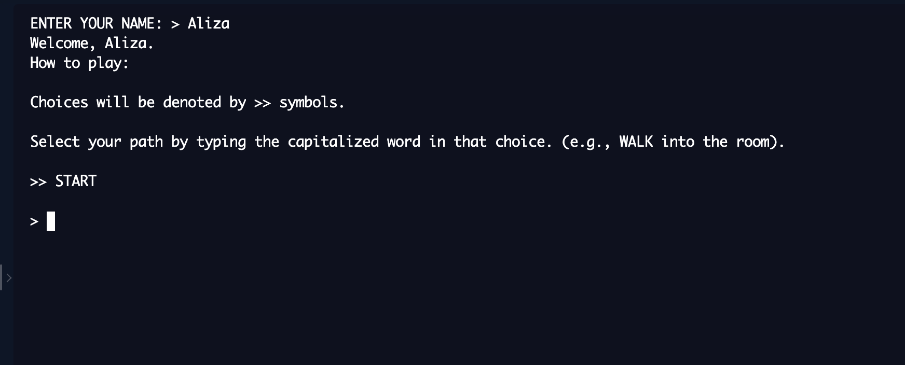
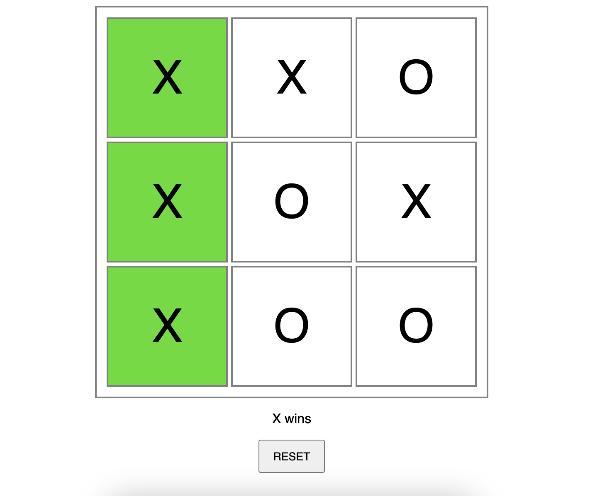
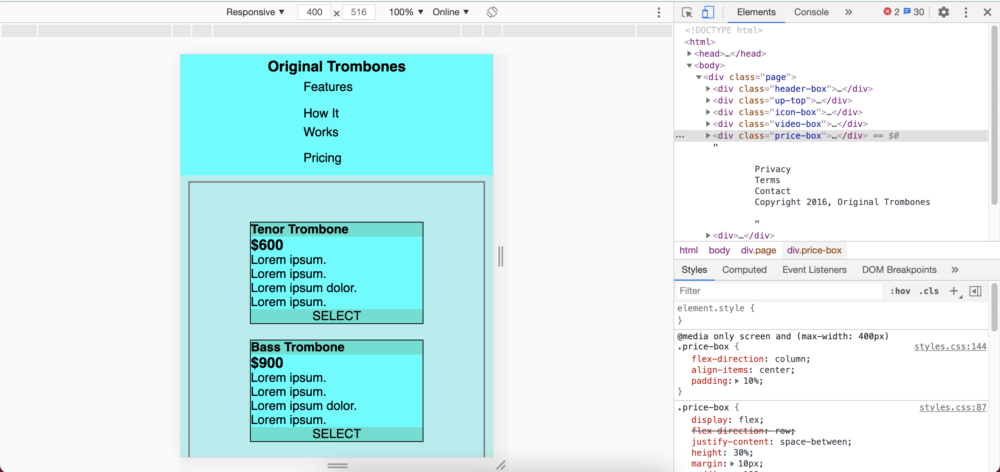
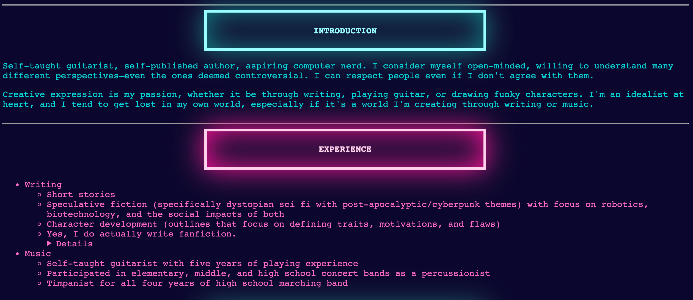

software projects
I'm studying software engineering at Thaddeus Stevens College of Technology. It wasn't really a conscious decision for me to become a software developer or work in IT or anything like that—I kind of just gravitated toward it through talking to friends and taking a couple high school programming classes. I didn't know if this would actually be something I'd enjoy.
But now that I'm here, I couldn't be happier.
Believe me, I was hesitant at first because how the hell would I have the attention span to become a programmer? But I've found that I actually love programming because it gives me so much creative freedom. It's black-and-white logic to create grey-area experiences, and I love that. It's an artistic medium like no other.
| The Interrogation | Tic Tac Toe Collab |
| Responsive Landing Page | CSS practice pages |